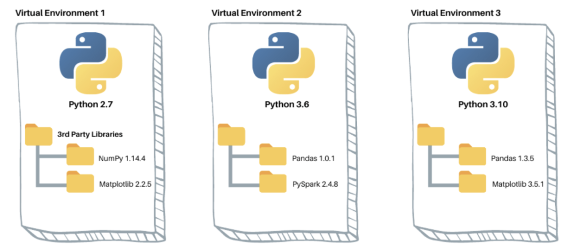

Environnements virtuels 🔐
Nous avons vu qu’un package Python constitue une collection organisée de modules : des fichiers de code Python structurés pour accomplir des fonctionnalités spécifiques. Ces packages représentent l'intelligence collective de la communauté mondiale des développeurs Python, mise à disposition sous forme de solutions réutilisables.
Dans vos développements, vous mobilisez constamment deux catégories de bibliothèques :
- Bibliothèques natives : Intégrées par défaut à Python
- Bibliothèques tierces : Développées par la communauté pour des besoins spécialisés (pandas, prophet ou numpy par exemple)
Ces packages encapsulent des solutions éprouvées pour des problématiques récurrentes, vous permettant de vous concentrer sur la logique métier plutôt que sur l'implémentation de fonctionnalités de base.
Quelques exemples de bibliothèques essentielles pour les analyses de données :
pandas: Manipulation et analyse de données structuréesnumpy: Calculs scientifiques et algèbre linéairepyspark: Traitement distribué de données à grande échelle
Python fournit nativement un ensemble limité de modules. L'écosystème complet s'appuie sur PyPI (Python Package Index), le référentiel central hébergeant plus de 500 000 packages spécialisés.
Les gestionnaires de packages comme pip permettent d'administrer
efficacement ces
bibliothèques
– installation, mise à jour, résolution de dépendances. Une commande telle que
pip install <package> vous donne accès instantané à des outils
sophistiqués développés par
des
experts internationaux, transformant des semaines de développement en quelques
lignes de code.
Cependant, cette facilité d'installation soulève une problématique cruciale : comment gérer les différentes versions de packages requis par vos multiples projets ? Comment éviter que l'installation d'une nouvelle bibliothèque pour un projet n'impacte un autre projet en cours ? Cette problématique nous amène naturellement à la notion d'environnements virtuels, solution fondamentale pour l'isolation et la gestion des dépendances en Python.
Qu’est-ce qu’un environnement virtuel ?
Un environnement virtuel est un espace de travail Python isolé et indépendant qui permet de créer des installations Python séparées sur une même machine. Chaque environnement virtuel dispose de sa propre collection de packages et de sa propre version de l'interpréteur Python, complètement isolée des autres environnements et de l'installation Python système.
Un environnement virtuel peut être comparé à une machine virtuelle (VM), mais uniquement pour Python. Tout comme une machine virtuelle crée un système d'exploitation isolé sur votre ordinateur, un environnement virtuel crée un espace Python isolé sur votre système. La différence principale est qu'une machine virtuelle virtualise l'ensemble du système (processeur, mémoire, disque) alors que l'environnement virtuel ne virtualise que l'écosystème Python (interpréteur, packages, dépendances).
Ainsi, l'environnement virtuel applique le concept de virtualisation de manière ciblée. Il crée une barrière qui permet à plusieurs projets Python de coexister sur la même machine avec des configurations différentes, sans interférence mutuelle.
Pourquoi utiliser des environnements virtuels ?
En tant qu'analyste ou développeur, vous travaillerez souvent sur plusieurs projets simultanément. Chaque projet peut nécessiter des versions spécifiques de certaines bibliothèques.
Exemple :
- Votre projet de prévisions nécessite :
pandas 1.0.6,pyspark 3.5.1 - Votre projet d’exploration de données requiert :
pandas 2.2.3,numpy 1.18.4
Le problème est évident : les deux projets utilisent pandas, mais dans des versions différentes. Sans environnements virtuels, il serait très difficile de satisfaire ces deux exigences simultanément avec votre machine. Les environnements virtuels résolvent ce problème en créant des espaces isolés où chaque projet peut avoir sa propre configuration, indépendamment des autres projets.
Cette illustration présente l'architecture de votre machine avec plusieurs environnements virtuels Python. Chaque environnement virtuel forme une arborescence de fichiers comprenant une version dédiée de Python, ses dépendances et ses scripts associés. Puisqu'il s'agit simplement de dossiers contenant des fichiers, vous pouvez créer autant d'environnements virtuels que nécessaire sur votre système.
Plusieurs raisons expliquent pourquoi différents projets peuvent nécessiter différentes versions d'une même bibliothèque :
Évolution des bibliothèques : Les bibliothèques populaires comme pandas évoluent constamment. Un projet démarré il y a 4 ans utilisera une version plus ancienne que celle d'un projet récent.
Contraintes de compatibilité : Certains projets peuvent nécessiter une version spécifique d'une bibliothèque pour fonctionner avec d'autres composants ou pour maintenir la stabilité.
Projets existants : Vous pourriez reprendre un projet développé par quelqu'un d'autre qui utilisait une version spécifique.
Chaque projet a donc son environnement virtuel avec sa propre installation Python et ses packages dédiés. L'activation permet de basculer rapidement entre projets sans conflits de versions. Reste à savoir : quel outil utiliser pour créer et gérer ces environnements ?
uv : L'outil unifié pour l'écosystème Python moderne
uv est un outil développé en Rust, qui révolutionne la gestion des environnements Python en unifiant trois fonctions critiques : la gestion des versions Python, la création d'environnements virtuels et la gestion des dépendances.
Ses principaux avantages sont sa vitesse d'installation, sa compatibilité avec l'écosystème Python existant (requirements.txt, setuptools), et sa facilité d'utilisation avec une syntaxe familière. uv est significativement plus rapide que les alternatives traditionnelles (venv, virtualenv, pyenv+pyenv-virtualenv, conda ou pipenv) tout en restant compatible avec l'écosystème Python existant.
Historiquement, les développeurs Python jonglaient entre plusieurs outils
spécialisés –
venv +
pip avec des fichiers requirements.txt pour les besoins
basiques,
conda
pour les environnements complexes incluant des dépendances non‑Python, et
pyenv pour
gérer les
versions de l'interpréteur Python. Cette approche fragmentée imposait la
connaissance de
syntaxes et
workflows
multiples, ralentissant la productivité.
Je vous recommande donc d'utiliser exclusivement uv pour l'ensemble de nos besoins, de la gestion des versions Python à l'installation des dépendances.
uv : Création d’un environnement virtuel
Voici un récapitulatif pour créer un environnement virtuel avec uv sur macOS et Linux/WSL2 :
1. Installation de uv
# Méthode recommandée
curl -sSf https://install.ultraviolet.rs | sh
# Alternative sur macOS
brew install uv
2. Création d'un environnement virtuel
# Création avec nom par défaut (.venv)
uv venv
# Ou avec Python 3.11
uv venv -p 3.11 .venv
# OU avec un nom personnalisé
uv venv mon_projet_env
3. Activation de l'environnement
# Pour l'environnement par défaut
source .venv/bin/activate
# OU pour un environnement personnalisé
source mon_projet_env/bin/activate
4. Installation de paquets
La sous-commande sync synchronise l'environnement virtuel actuel avec
les dépendances spécifiées dans vos fichiers de configuration
(généralement pyproject.toml ou requirements.txt).
L'option --all-extras indique à uv
d'installer toutes les dépendances optionnelles définies dans votre fichier de
configuration.
uv sync --all-extras
# Ou depuis un fichier requirements.txt
uv pip install -r requirements.txt
5. Désactivation quand vous avez terminé
deactivate
Points clés à retenir
- Un projet = un environnement virtuel dédié : Créez systématiquement un nouvel environnement virtuel pour chaque projet Python. N'installez pas de packages externes dans votre Python système ou géré globalement.
- Utilisez uv : uv unifie la gestion des versions Python, des environnements virtuels et des dépendances dans un seul outil.